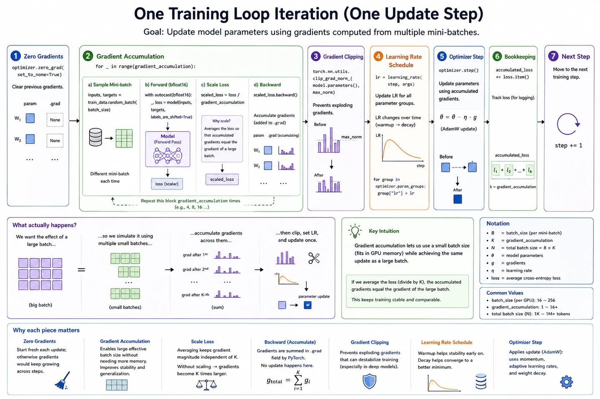

Your win: narrate one complete training step and distinguish the forward pass, backward pass, optimizer update, batch, step, and epoch.
18 minutesNeeds: next-token lossOutcome: read a training loop
Module bridge: the architecture defines a function \(f_\theta\). Training searches for parameter values \(\theta\) that make its next-token predictions less wrong.
Four operations form the essential loop
Forward: compute logits \(L=f_\theta(x)\).
Loss: compare logits with targets to obtain scalar \(\mathcal L\).
Backward: compute a gradient \(\nabla_\theta\mathcal L\) for every trainable parameter.
Update: let the optimizer change \(\theta\), then begin the next step.
Numbers substituted: one SGD update
For one weight \(w=2.00\), gradient \(g=0.30\), and learning rate \(\eta=0.10\):
The gradient is not the new weight. It is the local direction in which the loss increases; gradient descent steps in the opposite direction.

The full engineering loop adds gradient accumulation, clipping, schedules, and bookkeeping around the same forward-loss-backward-update core.
Batch, step, and epoch are different counters
Mini-batch
A group of (B) training windows processed together to estimate one useful gradient.
Optimizer step
One parameter update. Gradient accumulation may combine several mini-batches before this happens.
Epoch
One pass over the chosen training dataset, usually containing many optimizer steps.
Training versus inference: both run a forward pass. Training also has targets, loss, backward, and optimizer updates. Inference keeps the learned parameters fixed.
Code checkpoint · the irreducible PyTorch loop
Show one optimizer step
model.train()
optimizer.zero_grad(set_to_none=True)
logits = model(inputs) # forward: [B, T, V]
loss = F.cross_entropy(
logits.reshape(-1, logits.size(-1)),
targets.reshape(-1),
)
loss.backward() # fill parameter .grad tensors
optimizer.step() # update parameters once
Trace it: Which line changes parameters, and which line only computes their gradients?
Retrieval check
Which call actually changes the model parameters?
Practice before moving on
Update \(w=5\) using gradient \(g=-2\) and learning rate \(\eta=0.1\).
Put these in order: optimizer step, forward pass, backward pass, loss.
Why clear old gradients before a normal optimizer step?
If four mini-batches are accumulated before one update, how many forward and backward passes occur per optimizer step?
State one operation present in training but absent in ordinary inference.
Explain why a lower training loss does not automatically prove better real-world behavior.
Check solutions
\(5-0.1(-2)=5.2\).
Forward → loss → backward → optimizer step.
PyTorch accumulates into .grad; stale gradients would contaminate the next update.
Four forward and four backward passes, followed by one optimizer update.
Examples include computing target loss, backward, or updating weights.
The model may overfit training data or optimize a narrow objective that does not capture deployment quality.